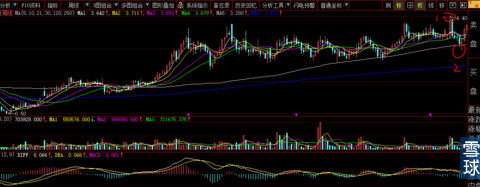
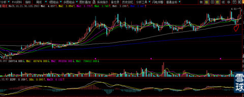
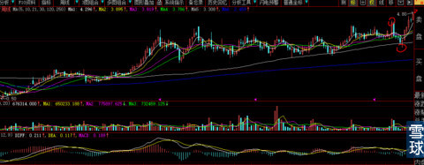
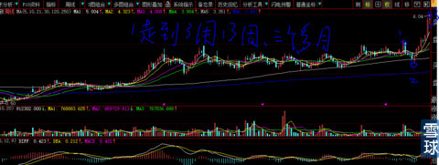
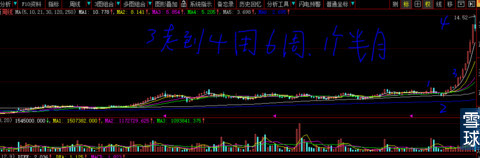
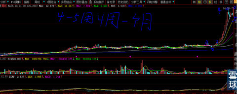
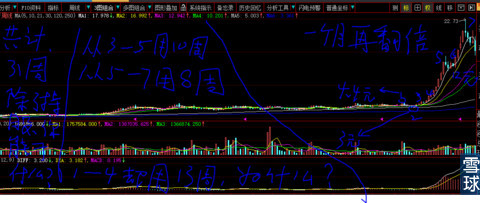

下面的图片是周线图，请你务必记住。知道我在说什么、看懂我想说什么的人，请你闭嘴，不要说出来，世界上不是只有你一个聪明人。
下图长的无论与你手中的股票多么像双胞胎，不要说出来。从1到2杀跌1个月，跌幅已经让除了大庄之外所有的持有人心惊胆战。现在好不容易快回到1的位置，谁不想保本逃命呢？试想，主力如果直接从1的位置上拉，还会有人跑吗？你不跑难道主力心甘情愿为了你成为富人而抬轿？

刚刚回到前期平台，身在其中的人对上次耗时2个半月坐电梯记忆犹新，当然是跑掉长长松口气罗。见下图

你走了就好了，下周与你的想法是相反的。这就是庄股的魅力，只有你想不到的，没有它做不到的。见下图

走到下图这个时候的形态，已经对我没有任何秘密了，当然对全市场看电影的人而言：冰冰浑身都是谜，虽然她除了脸以外身体里长得个其实跟别的女人一模一样。

牛股的加速征程开始，从3走到4用了6周，也就是1个半月，3的位置价格是5.77元，4的位置是14.52元，所以我说：主升浪是从较高位置开始的。看破我要说什么的人你现在身在底部不知福，还穷问穷问，真是：叫花子嫖婊子——钱少事多。

由于太多筹码在主力手里，股价从14.5元回落震荡4周，也就是1个月后的最低价11.32元，跌幅为-28%，是谁也受不了。见下图

一个月后股价再涨到22.73元，是最上面第一张图片中位置2最低价3.05元的7.45倍，是位置3价格4.42元的5.14倍。

从上图6—7用时4周也就是1个月股价涨幅1倍；
从上图4—5用时6周也就是1个半月股价涨幅1.56倍；
从上图位置1—4耗时13周，也就是3个多月，股价仅仅只是回到前期平台。
看看，这是多么不公平啊，持有最长的一段时间股价基本原地踏步，后面同样的3个月股价翻倍再翻倍。告诉你：世界上所有的事情不公平是绝对的，公平是相对的。公正、公平、公开是人类社会相处不懈追求的目标，不公平、不公正、不公开只要是人类社会，就永远是现实中绝对的存在。
我：洞悉、深知这一切，更是深刻理解“财不进急门”的道理，即使手中有利剑，也只刺最大的目标而不会旁顾左右。老子天生富贵，财富之门为我而打开，任你是谁也无法阻挡。
当你对持有的那个家伙有质疑的时候，就大声告诉自己：
老子天生富贵，谁也无法阻挡！
本帖是2015年1月15日写的，今天是1月26日。600638新黄浦已经彻底走出来了。你们也可以公开谈论它了。
亲粉们被压抑的精神也可以适当的释放了。
不过要记住再回头看看上面的举例：后面的路还长着呢！
ChenMatthew@炒的是心:
有个问题想不明白，两家公司举牌忙的不亦乐乎，可是并不上拉股价，两家公司合计持有股份不少了，似乎在等什么消息？这个爆破点是什么呢？另外，都明牌了，不怕其他机构抢筹？坐庄也不容易
炒的是心@ChenMatthew:
就是我文章中写到的：2年后不知道又有多少散户会填进这个预挖已久的大坑里。
金控平台缺的是资本金而且都是大股本，新黄浦目前的股本数量对于金控公司而言太小太小，看看券商的股本就明白了。现在他们手上的筹码与未来相比，都是沧海一粟（所以才敢于如此高利贷一举N个亿）必是先对自己定向资产增发，股价炒高后再对基金高价现金增发。在市场资金、指数如此之好的大环境下，他们绝对会超额完成期初的预期。两家大股东的主营业务是竞争关系，换句话说就是业务内容相近亦或相同，联合注入改变新黄浦主业方向是完全可能的，凭我的职业经验（估计最初就是这样设计的，并且海通证券就是充当此事的投行，我的职业就是干这种工作的）。他们不约而同的在熊市环境下举牌，就是看中的新黄浦优质的房地产质量和存量商业地产质量，这些资产的剥离简单而轻易转让，不像其他企业，资产不愁没有下家接手，都是笨资金（每年能够获取5%收益就嘴笑道后脑勺的资金例如养老金年金等）的抢手货。
 |
老子天生富贵，谁也无法阻挡！炒的是心 2015-01-15 13:19:32 |
Copyright © 1996-2014 SINA Corporation All Rights Reserved.